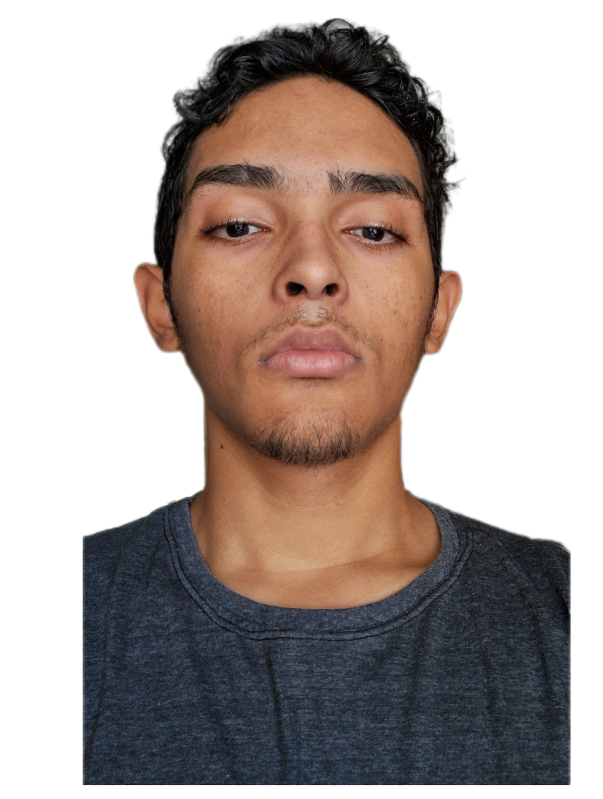

Gosto bastante de gatos, animes, jogos e música (assuntos da cultura geek
no geral). Meus hobbies são jogar games competitivos e assistir a
animes no tempo livre. Os jogos que mais estou jogando no momento são
Minecraft e Brawlhalla.
Meus animes favoritos são Fire Force, To Your Eternity, 86: Eighty-Six e
Toilet-Bound Hanako-kun. Além disso, sou bem eclético em relação a
música: escuto de tudo.